Short URL for this page: rb.gy/wwnbvs
Transformers
- Models for sequences of data
- Unlike RNNs (LSTMs, GRUs..) they can handle really long sequences and are computationally fast.

Some sequence modeling problems:
1. Token Classification (Named Entity Recognition)
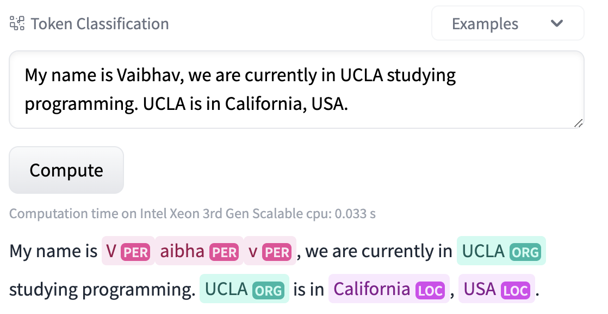
Try it here
2. Sequence Classification (Sentiment Analysis)
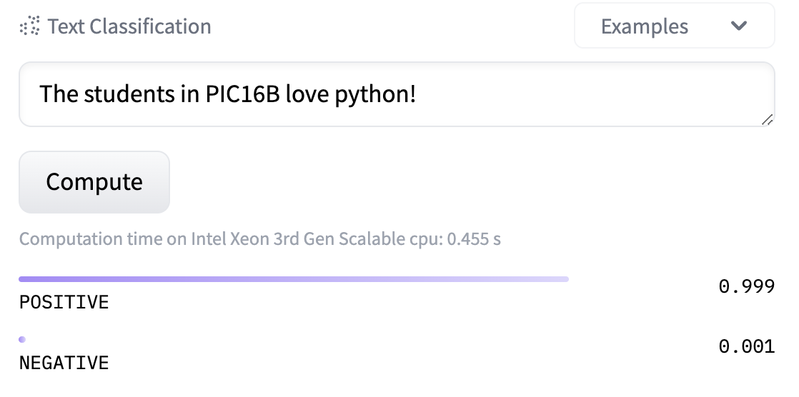
Try it here
3. Language Generation – Machine Translation
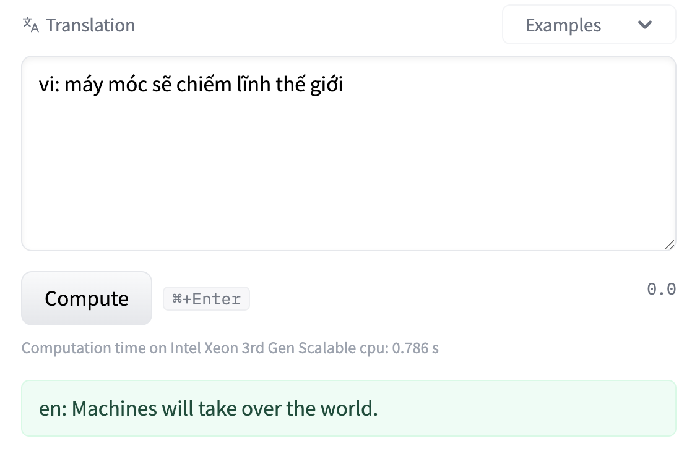
Try it here
4. Language Generation – Information Engine/Chat model
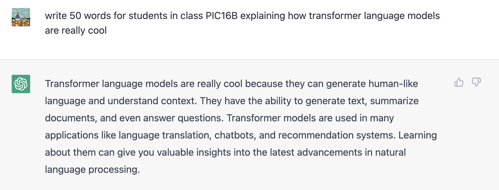
- It actually generated 58 words, not 50.
- Try it here: https://chat.openai.com/
Sequences beyond language?
Think…
Checkout more models and tasks here: HuggingFace
Paper: Attention is all you need
Investment in research pays off with $$$$ 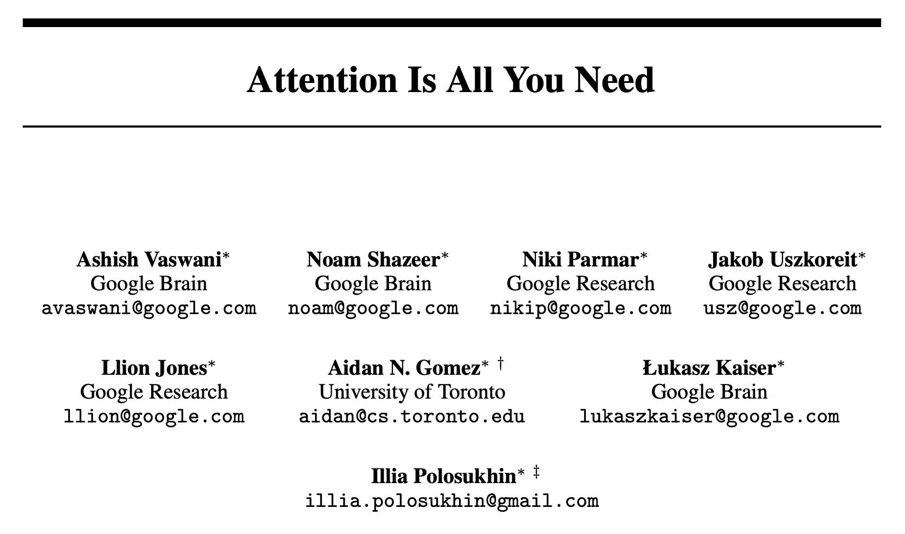
Breaking down the model:
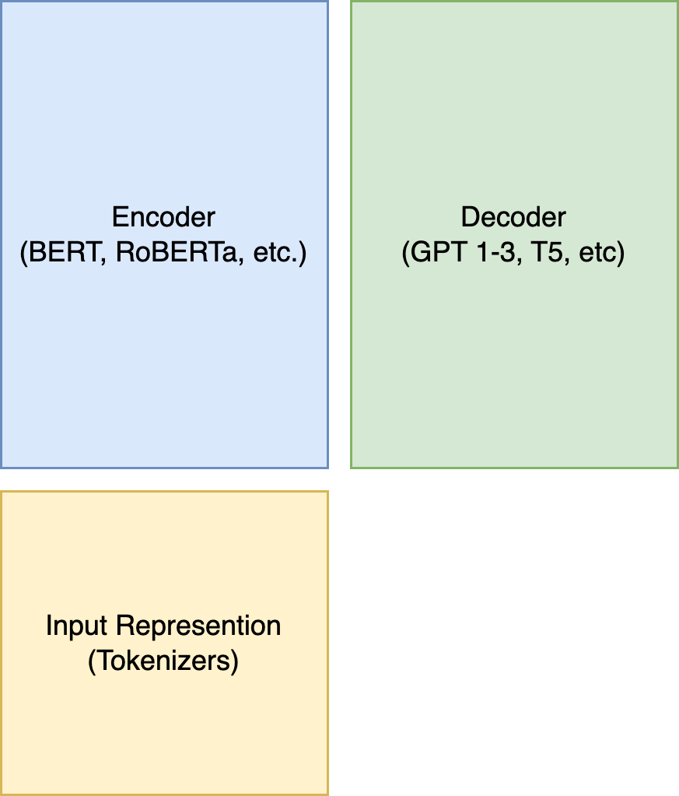
- Input Representation
- Encoder
- Decoder
Huggingface Transformers
For all our experiments on transformers, we will be using the huggingface transformers library.
pip install transformers
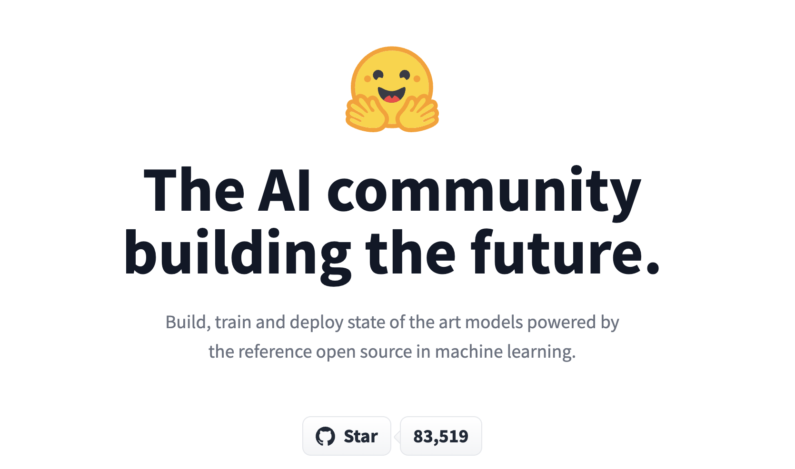
Input Representation
Encoder
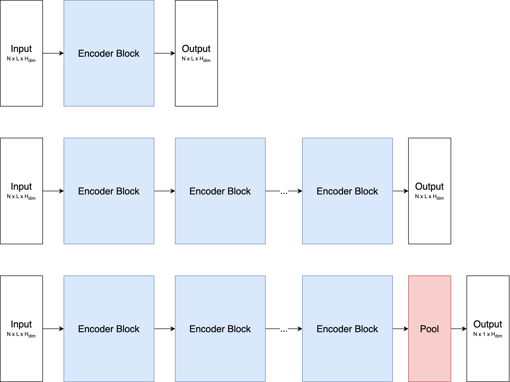
Use encoder only models for:
- Sentence Classification
- Token Classification
- Clustering
Decoder
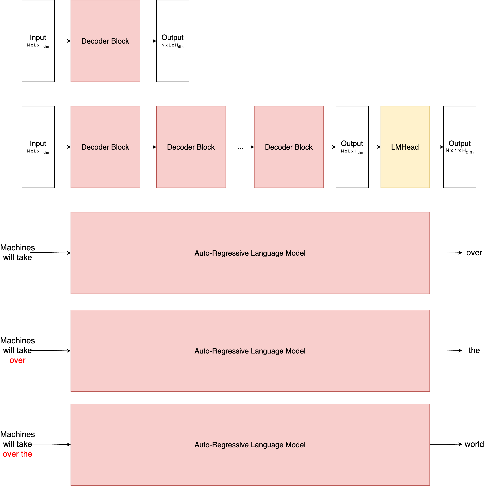
Use decoder only models for:
- Generating Text for:
- Continuations for a prompt
- Question Answering
- Chatbots
Encoder Decoder Models
Use encoder-decoder models for:
- Translation
- Style-rewriting: Formatl to informal
Expanding Creativity with Transformers
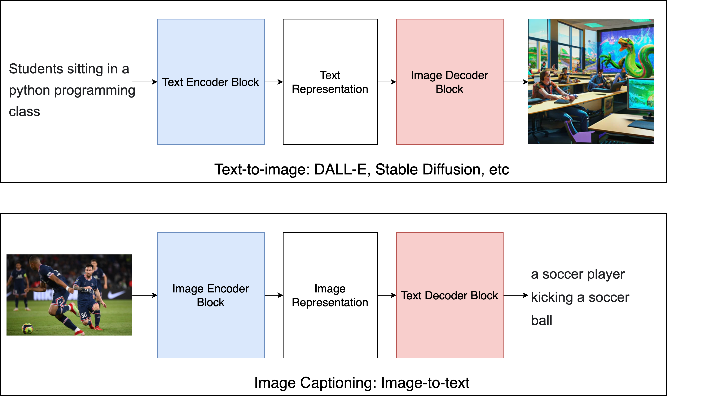
Some important concepts we have skipped:
- Self-Attention
- Masked Self-Attention
- Cross Attention
- GPU Parallelizability of transformers
- Decoding Algorithms:
- Beam Search
- Nucleus (Top-p) Sampling
- Top-k Sampling
Self Attention
Self Attention Equation:

Self Attention Map (in Encoders):
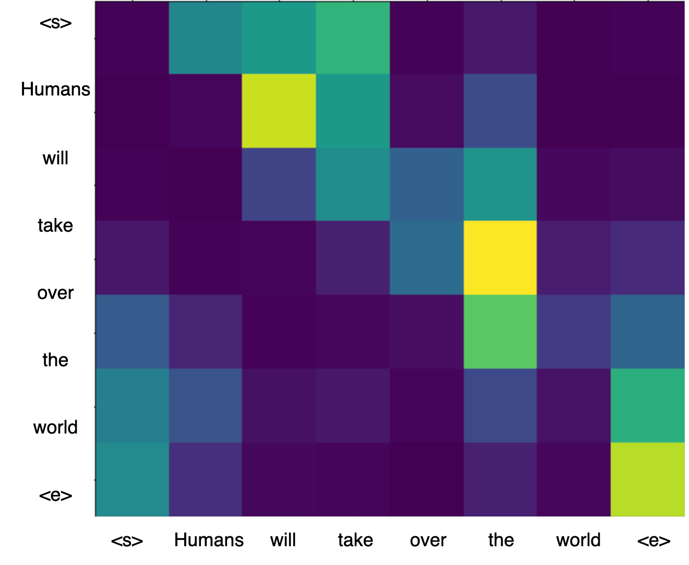
Masked Self Attention Map (in Decoders):
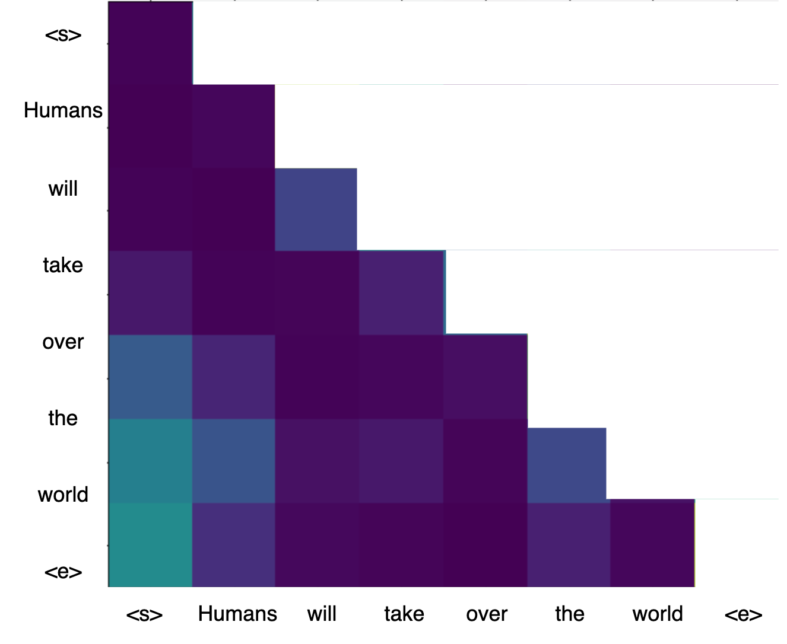